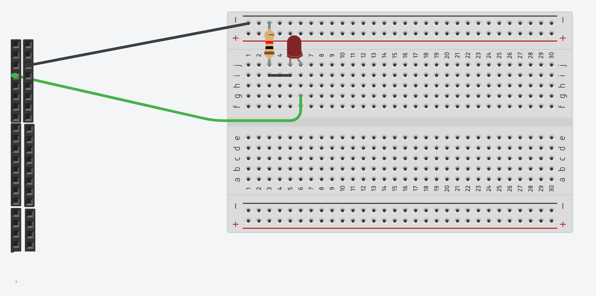
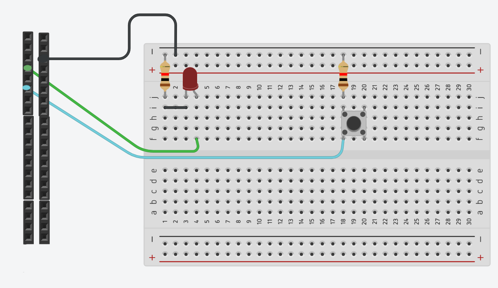
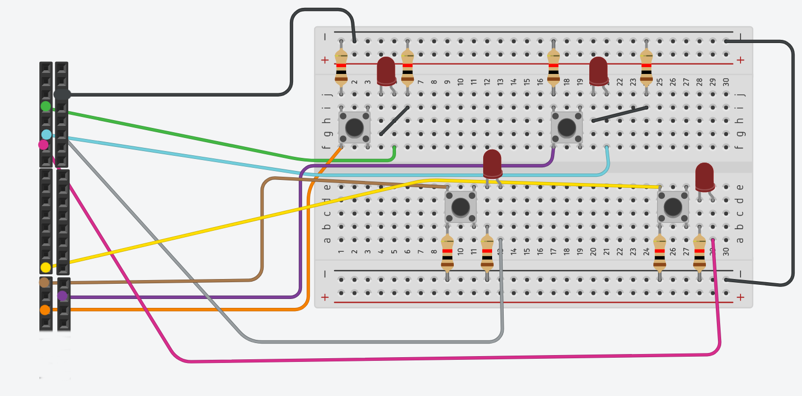

In order to get our LED working we must first connect the led to
the pi as shown below:

After the led is wired up we can now go ahead and edit the
file titled "gpio.py"
There is some code for us to fill in before it will work.
After the code is filled in, uncomment the function blink_led() at the bottom of
the file and run it with the command below:
python3 gpio.py
Now you should have a blinking LED!
Again we must connect our switch to our pi for it to work, so follow
the diagram below to hook it up:

After the LED is wired up, fill in any missing code in gpio.py
Next comment out the function you previously uncommented, and uncomment the
led_on_switch() function.
You can again run the program with the command:
python3 gpio.py
Yor LED should now light up when the switch is pressed.
Again we must connect our switches and LEDs to the pi.
This time there is consiterably more switches and LEDs to consider.
Follow the diagram below to hook it up:

**Important** Be sure to double check that you have wired everything
correctly or damage may result to the pi!
Next comment out the function you previously uncommented, and uncomment the
simon() function.
You can again run the program with the command:
python3 gpio.py
You should now be able to play simon!